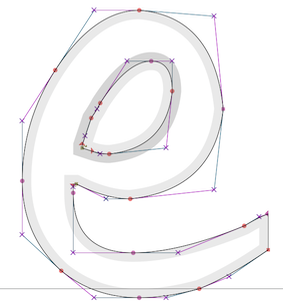

A major theme of this course is the selection and construction of functions. We started the course by introducing a small set of basic modeling functions that generations of experience has shown to be good models in a wide variety of circumstances. We introduced methods to derive new functions from the basic modeling ones: linear combinations, inversion, differentiation, integration. Low-order polynomial functions are useful for expressing general modeling ideas such as growth, interaction, and optimality. Sinusoids and their imaginary cousin, exponentials, are often the go-to forms for constructing a function that meets the mandate given by a differential equation. Taylor polynomials were historically an important technique for working with functions; much of their actual utility in today’s world is captured by the idea of low-order polynomial models.
We considered several techniques for constructing functions that are a good match to data: use of log-log and semi-log axes in graphics, solving the “target problem” of linear combinations (which is conventionally called “least squares fitting”).
Today’s topic is yet another important method for constructing functions that match with data. What’s different here from least squares is that we do not consider the data as a “cloud” of points that we want our eventual function to stay close to. Today, each data point will be a mandate; the function is required to go through each and every point exactly.
As a motivating example, consider the programming of robotic arms as in the video:
This isn’t a robots course, so we’ll simplify. The arm has a resting position. When a car frame comes into place, the arm moves so that it’s welding electrodes are at a specific, known place in space near the car body. Then it moves in sequence to other places where a weld is using and eventually back to its resting position.
Programming the robot might come down to listing in sequence the specific locations where the weld is to be made. This might include helper points to avoid coliding with the work piece when moving between welds. The movement is governed by various joints, gears, and wheels as well as actuators: hydraulics, stepping motors, etc. We need to tell those actuators what position they should be in at each moment of time.
The problem of converting the discrete list of weld and helper points into a continuous signal for the actuator is an instance of a mathematical process called interpolation. Generally, there will be multiple signals going to multiple actuators, but to simplify we’ll consider the problem with just one variable \(x\) for position and \(t\) for time.
Another example … In computer-aided design (CAD) systems, curved shapes are usually described by a person’s placement of isolated points which are then automatically combined into a smooth form. For instance, the outline of a letter in a computer font is often specified by a series of knot points with specified levels of smoothness (or lack thereof), as in this construction of a lower-case “e”.

Humans have a natural ability to generate smooth movements. In drawing, there can be artistic value in a lack of smoothness, as illustrated in celebrated artist David Hockney’s drawing of his mother.
Before the era of digital design and manufacturing, smooth curves were described by clay or wooden models hand-crafted by skilled workers. Material was removed to conform to the models by machine tools directed by cams running over the models, by hand sanding and polishing, as shown in this video of propeller manufacture during World War II.
Spline functions and digital actuators have largely replaced such analog models.
There are often occasions when we measure a continuous process at discrete points in time and space. In this section, we’re going to explore the data Johannes Kepler (1571-1630) used in discovering and formulating his famous theory of planets in elliptical orbits. For about half the year, other planets are on the other side of the Sun from Earth, and so not directly observable.
Here is a graph of Kepler’s calculations of the distance of Mars from the Sun. (See “Background” section at the bottom of the page.) The sandbox makes a somewhat intricate plot, so read carefully the following:
Observations <- kepler_sample(seed=NULL)
connector <- spliner(kepler.radius ~ kepler.angle,
data = Observations)
polynomial <- makeFun(lm(kepler.radius ~ poly(kepler.angle, 2),
data = Observations))
gf_point(kepler.radius ~ kepler.angle,
data = Kepler, alpha=0.25) %>%
gf_point(kepler.radius ~ kepler.angle,
data = Observations, size=3) %>%
slice_plot(connector(kepler.angle) ~ kepler.angle) %>%
slice_plot(polynomial(kepler.angle) ~ kepler.angle, color="red") Code-reading questions
The black curve in the graphic drawn by the sandbox is a “cubic spline” interpolating function. Remember that the spline was constructed referencing only the selected points drawn as large dots. The other points from Kepler’s data are there only to show how well the interpolant provides a match
The red curve in the graphic is a “global” polynomial. Here, “global” means “the same polynomial at all points in the domain.”
The 2nd-order polynomial is not a function that interpolates these data. This is simply because the six selected data points do not lie on a parabola.
Change the order of the polynomial used by changing the integer argument in poly(kepler.angle, 2). If you make the integer too large, you’ll get an error message. If you make the integer too small, the global polynomial won’t go exactly through the data.
Let’s try making functions based on more data. To do this, in the kepler_sample() function use an argument n. For instance, n=10 will select ten instead of the default six points. You can leave the seed=NULL argument.
The global polynomial is a linear combination of power-law functions, e.g. \[p(x) = a_0 + a_1 x + a_2 x^2 + \cdots\]
The R function lm(), which we used last semester, finds the particular coefficients \(a_0, a_1, \ldots\) to best match the polynomial to the data. But we could do the same thing by using any other functions we like, e.g. \(\sqrt{x}\), \(e^x\), \(\sin(x/1.2)\), and so on.
A consequence of this is that we always have an infinite number of different interpolating functions. Which one to choose? In the next sections we’ll explore the properties which so often make the cubic spline the preferred method.
Another question is whether we should use any interpolating function in the first place. Perhaps “getting close” to the data is good enough? This is the difference between interpolating data and smoothing data. The answer to the question, “interpolate or smooth,” depends on the modeling context for which the function is being constructed. Smoothing is based on statistical ideas that we don’t have time to cover in this course, but a core skill of expert modelers is to know when to use interpolation and when to use smoothing.
Background (Optional): The raw measurements (not included here) that Kepler used in his calculation were made by Tycho Brahe (1546-1601). Those raw measurements were of the angle of Mars with respect to Earth. Kepler estimated the orbital period of Mars to be 687 Earth days. (The current accepted value is 686.980 days.) Knowing the period, Kepler could find pairs of Earth days separated by multiples of the period. In each pair, the Earth would be in a different position, but Mars would be in the same position. Thus the distance of Mars from Earth could be estimated by triangulation.
The angle was not directly measured for each occasion. Instead, knowing the radius versus time Kepler was able to discern when Mars was at its greatest and closest distance to the Sun. The angle tells where Mars is along its orbit. An angle of 0 is the position when Mars is closest to the Sun. An angle of 3.14 is when Mars is farthest from the Sun.
The time is time of the observation given as an interval in Earth days from 8:15am Greenwich time on 9 March 1584.
In this section, you’ll explore some of the properties of splines and a couple of other types of interpolating functions.
To simplify, we’ll package code of the sort you encountered in the Kepler exercise into a mouse-driven app, here.
When you start the app, it will display in the top graph a small set of randomly generated data points. These are called knot points; the points the interpolator is bound to go through.
There are three types of interpolating functions on offer:
Pressing “Start again” generates a new set of knots. You can also select the number of knots to use.
The top graphic shows the knot points and any of the interpolators you have chosen to display.
The middle graph shows the first derivative with respect to \(x\) of the interpolating functions. The last graph (if displayed) shows the 2nd derivative with respect to \(x\).
There is also a control that allows you to narrow the region of display to exclude the first and last of the knots. All the knots are still being used to construct the interpolants, but only the middle segment of the interpolants is displayed.
When you start the app, five randomly generated knots are shown together with the straight-line interpolating function.
Turn on the display of the cubic-spline interpolator.
Now turn on the display of the global polynomial interpolator. (You can turn off the cubic-spline display.)
A global polynomial has a nice feature: all orders of derivatives are continuous. But there is a huge disadvantage. Polynomials, like dogs chasing squirrels, always run off to infinity in the end. This off-to-infinity behavior always occurs outside the domain of the knots. Even so, it is highly relevant to what goes on inside the knots’ domain, because the polynomial function “wiggles” as if to gain momentum for its infinite run. To use a metaphor, a polynomial is like a player rounding the bases in baseball. To go fast and yet to touch each base requires that the runner curve considerably outside the direct path from base to base.
For this exercise, let’s define a wiggle this (highly informal) way:
A wiggle is a change in sign of the slope of the function in the interval between two adjacent knot points.
Again, we’ll use the “exploring interpolation” app, here.
Turn on both the cubic-spline and the global cubic displays; you’re going to be contrasting their behavior. (You don’t need the linear interpolant to be displayed.)
We’re going to ask a series of questions about the behavior of the interpolants. Since knot points are generated at random, it might be that one particular set of knot points does not demonstrate clearly the feature that we’ll as about. Therefore, in answering each question press “Start again” several times to find out whether the presence or absence of the feature is generic or due simply to the play of chance.
The app has a control to change the \(x\)-scale of the display, excluding the first or last few knots. (The interpolating function, however, uses all the knots.)
In case you’re wondering … The app has a “jitter” button. This adds a small random vertical displacement to the knot points. This simulates the situation when the knot points are drawn from noisy data. A method (such as interpolation with polynomials) is called ill-conditioned when it tends to magnify the effect of noise. You can get an idea for this by pressing “jitter” many times and looking at the spread of the resulting interpolating functions. The higher the order of polynomial, that is, the greater the number of knot points, the worse the magnification. You can judge for yourself whether the cubic spline suffers from a similar problem.
Location: CalcZ/_DailyDigitals/DailyDocuments/inst/DD-142Z-30/142Z-DD-30.Rmd DD-142Z-24
{kind=link}